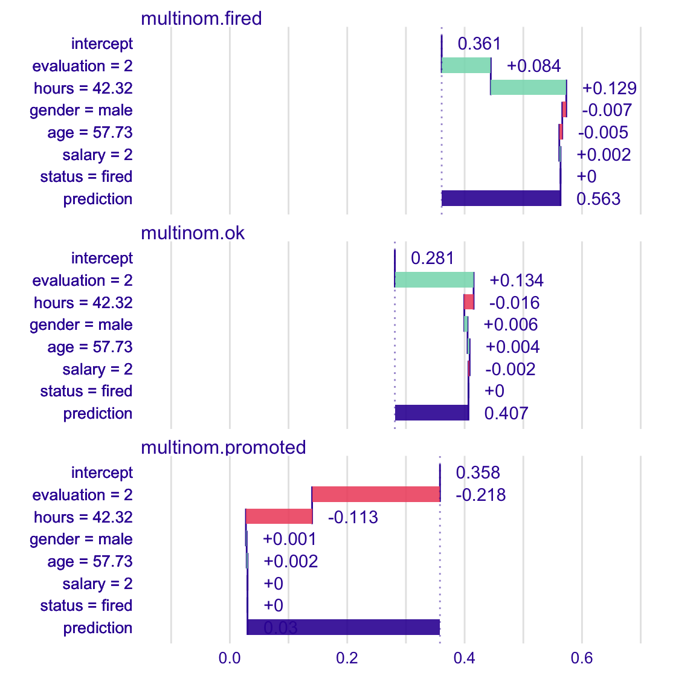
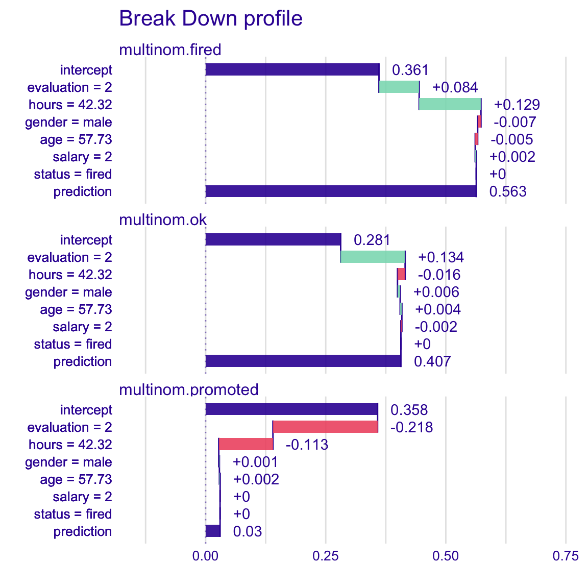
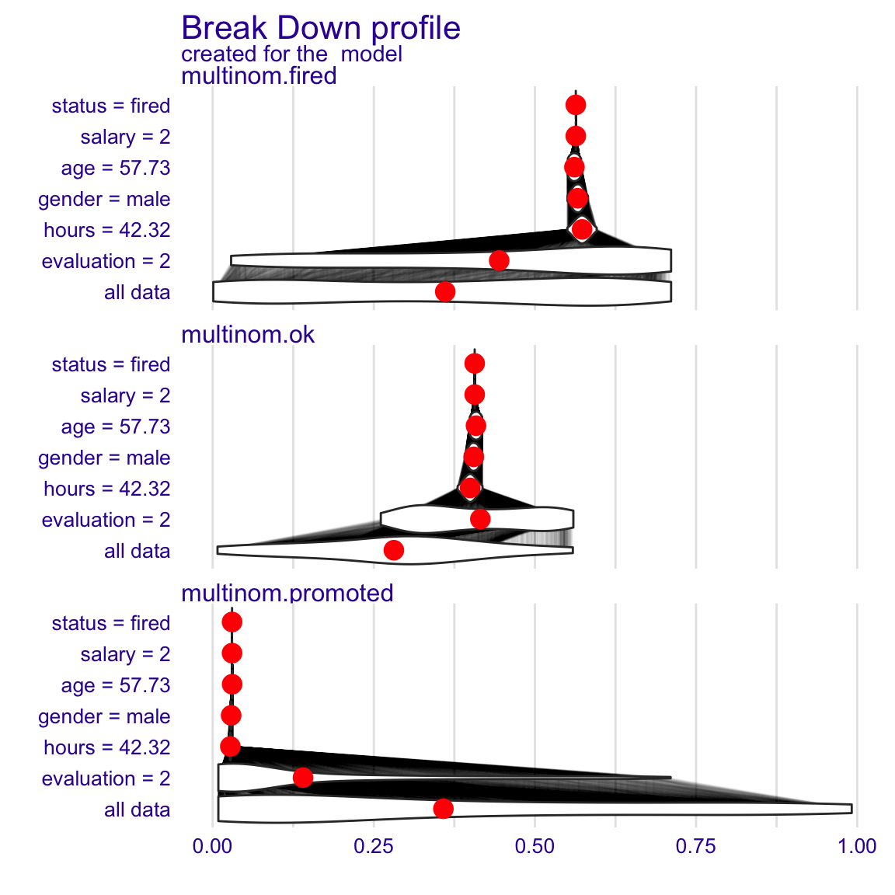
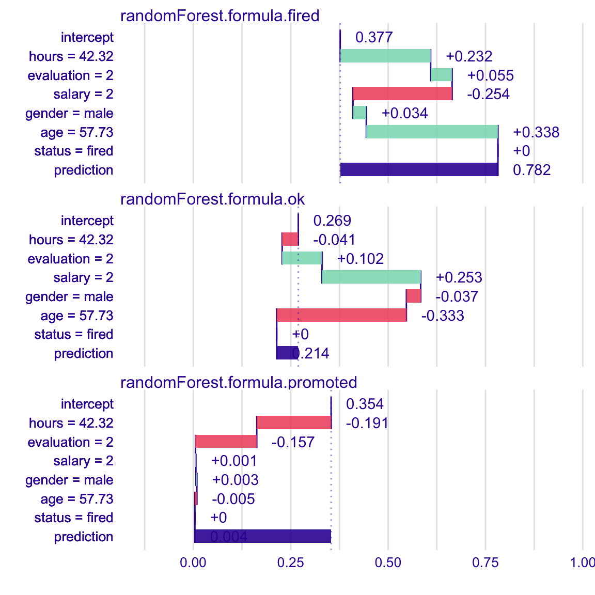
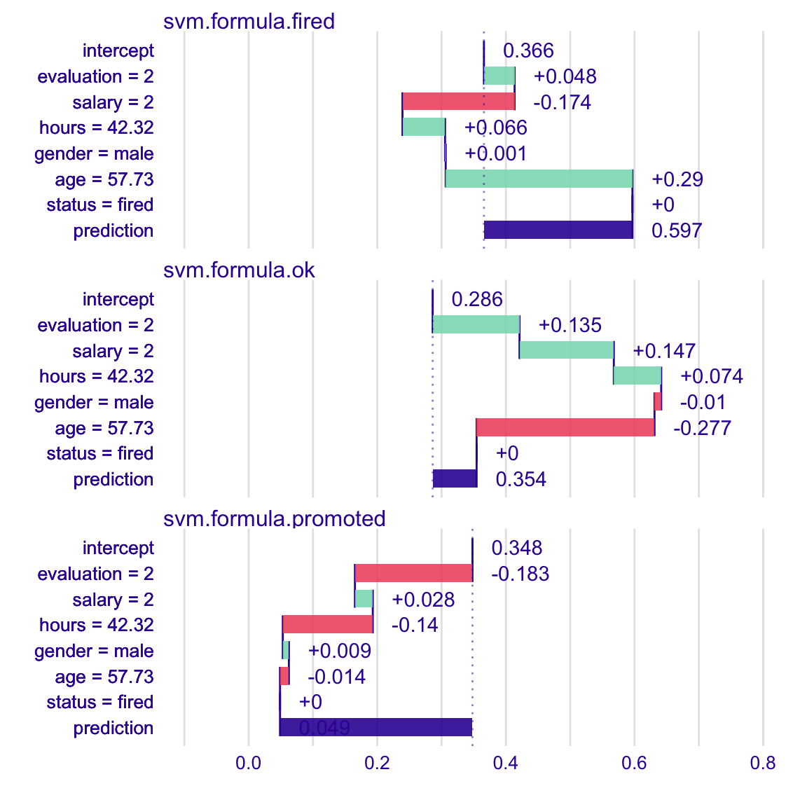

vignettes/vignette_iBreakDown_classification.Rmd
vignette_iBreakDown_classification.RmdHere we will use the HR data from DALEX package to present the iBreakDown for classification models.
#> gender age hours evaluation salary status
#> 1 male 32.58267 41.88626 3 1 fired
#> 2 female 41.21104 36.34339 2 5 fired
#> 3 male 37.70516 36.81718 3 0 fired
#> 4 female 30.06051 38.96032 3 2 fired
#> 5 male 21.10283 62.15464 5 3 promoted
#> 6 male 40.11812 69.53973 2 0 firednew_observation <- HR_test[1,] new_observation
#> gender age hours evaluation salary status
#> 1 male 57.72683 42.31527 2 2 firedFirst, we fit a model.
#> # weights: 21 (12 variable)
#> initial value 8620.810629
#> iter 10 value 7002.127738
#> iter 20 value 6239.478146
#> iter 20 value 6239.478126
#> iter 20 value 6239.478124
#> final value 6239.478124
#> convergedTo understand the factors that drive predictions for a single observation we use the iBreakDown package.
However, sometimes we need to create custom predict function which returns probalilities.
p_fun <- function(object, newdata) { if (nrow(newdata) == 1) { as.matrix(t(predict(object, newdata, type = "prob"))) } else { as.matrix(predict(object, newdata=newdata, type = "prob")) } }
Now we create an object of the break_down class. If we want to plot distributions of partial predictions, set keep_distributions = TRUE.
bd_glm <- local_attributions(m_glm, data = HR_test, new_observation = new_observation, keep_distributions = TRUE, predict_function = p_fun)
We can simply print the result.
bd_glm#> contribution
#> multinom.fired: intercept 0.361
#> multinom.fired: evaluation = 2 0.084
#> multinom.fired: hours = 42.32 0.129
#> multinom.fired: gender = male -0.007
#> multinom.fired: age = 57.73 -0.005
#> multinom.fired: salary = 2 0.002
#> multinom.fired: status = fired 0.000
#> multinom.fired: prediction 0.563
#> multinom.ok: intercept 0.281
#> multinom.ok: evaluation = 2 0.134
#> multinom.ok: hours = 42.32 -0.016
#> multinom.ok: gender = male 0.006
#> multinom.ok: age = 57.73 0.004
#> multinom.ok: salary = 2 -0.002
#> multinom.ok: status = fired 0.000
#> multinom.ok: prediction 0.407
#> multinom.promoted: intercept 0.358
#> multinom.promoted: evaluation = 2 -0.218
#> multinom.promoted: hours = 42.32 -0.113
#> multinom.promoted: gender = male 0.001
#> multinom.promoted: age = 57.73 0.002
#> multinom.promoted: salary = 2 0.000
#> multinom.promoted: status = fired 0.000
#> multinom.promoted: prediction 0.030Or plot it.
plot(bd_glm)

Use the baseline argument to set the origin of plots.
plot(bd_glm, baseline = 0)

Use the plot_distributions argument to see distributions of partial predictions.
plot(bd_glm, plot_distributions = TRUE)

For another types of models we proceed analogously.
library(randomForest) m_rf <- randomForest(status ~ . , data = HR) p_fun <- function(object, newdata){predict(object, newdata = newdata, type = "prob")} bd_rf <- local_attributions(m_rf, data = HR_test, new_observation = new_observation, predict_function = p_fun) bd_rf
#> contribution
#> randomForest.formula.fired: intercept 0.378
#> randomForest.formula.fired: hours = 42.32 0.231
#> randomForest.formula.fired: evaluation = 2 0.071
#> randomForest.formula.fired: salary = 2 -0.252
#> randomForest.formula.fired: gender = male 0.025
#> randomForest.formula.fired: age = 57.73 0.355
#> randomForest.formula.fired: status = fired 0.000
#> randomForest.formula.fired: prediction 0.808
#> randomForest.formula.ok: intercept 0.270
#> randomForest.formula.ok: hours = 42.32 -0.045
#> randomForest.formula.ok: evaluation = 2 0.090
#> randomForest.formula.ok: salary = 2 0.250
#> randomForest.formula.ok: gender = male -0.029
#> randomForest.formula.ok: age = 57.73 -0.346
#> randomForest.formula.ok: status = fired 0.000
#> randomForest.formula.ok: prediction 0.190
#> randomForest.formula.promoted: intercept 0.353
#> randomForest.formula.promoted: hours = 42.32 -0.186
#> randomForest.formula.promoted: evaluation = 2 -0.161
#> randomForest.formula.promoted: salary = 2 0.002
#> randomForest.formula.promoted: gender = male 0.003
#> randomForest.formula.promoted: age = 57.73 -0.009
#> randomForest.formula.promoted: status = fired 0.000
#> randomForest.formula.promoted: prediction 0.002plot(bd_rf)

plotD3(bd_rf)
library(e1071) m_svm <- svm(status ~ . , data = HR, type = "C-classification", probability = TRUE) p_fun <- function(object, newdata){ p <- predict(object, newdata = newdata, probability = TRUE) attr(p, "probabilities") } bd_svm <- local_attributions(m_svm, data = HR_test, new_observation = new_observation, predict_function = p_fun) plot(bd_svm)

plotD3(bd_svm)